Onu Camelia Turcu Ramona-Andreea Anul II , grupa B6 Facultatea de Informatica Universitatea Alexandru Ioan Cuza Iasi
Sa se dezvolte o aplicatie Web care permite utilizatorilor ghicirea numelor unor personalitati celebre cu ajutorul imaginilor (preluate local sau folosind un serviciu online precum Flickr ori Instagram), fie prin tastarea directa a numelor (gen Spanzuratoarea), fie prin apelarea la metode ajutatoare (variante de alegeri sau cu ajutorul unui prieten). Utilizatorii autentificati vor avea la dispozitie un istoric al punctajelor proprii obtinute pe baza sesiunilor de joc. Clasamentele vor putea fi facute publice atat sub forma de document HTML, cat si ca flux de stiri Atom, inclusiv in formatele CSV si JSON.
Documentatie aplicatie :
Aplicatia permite utilizatorilor accesul la un joc prin care acestia ghicesc numele unor personalitati cu ajutorul unor poze furnizate de aplicatie. Utilizatorul va intra in joc prin intermediul unui site web.Acest site va contine multiple pagini web cu jocul propriu-zis,clasamente pentru acel joc cat si posibilitati de editare a contului curent. Jocul va porni din HOMEPAGE.I se va aloca o pagina separata de unde utilizatorul va putea alege daca va continua un posibil joc anterior sau daca va incepe joc nou.Odata intrat in joc,va avea de ales dintre multiple optiuni de joc.Va avea de ales nivelul de dificultate,metode ajutatoare. In baza de date a aplicatiei vor exista o serie de imagini care vor fi folosite de catre aceasta. Utilizatorul aplicatiei a trebui sa foloseasca un client Web-browser.
Aplicatia foloseste protocolul HTTP care face parte din stiva de protocoale TCP/IP. Protocolul HTTP preia cererea de la client si o furnizeaza serverului Web,care o proceseaza. Acesta este ,deasemenea,folosit ca protocol generic pentru comunicarea intre agentii utilizator(browsere) si alte si alte resurse disponibile din diverse aplicatii ce se gasesc pe Web.
1.HTML Denumirea vine de la HyperText Markup Language si se defineste ca fiind un limbaj de formatare si structurare a documentelor web utilizand o varietate de etichete si atribute. HTML ofera: -portabilitate:fiecare browser il suporta -simplu si usor de inteles -poate incorpora alte limbaje 2.CSS Cascading Style Sheets (CSS) este un limbaj style sheet folosit pentru a descrie aspectul si formatarea unui document scris intr-un limbaj markup. Aplicarea sa cea mai comuna este in paginile web scrise in HTML si XHTML, insa poate fi aplicat la orice tip de document XML. CSS ofera: -vizualizarea continutului adaptat pe toate device-urile -prin separarea continutului de design,se reduce timpul de transfer a fisierelor. 3. JavaScript JavaScript este un limbaj de programare creat de Netscape, serveste la dezvoltarea aplicatiilor web si de cele mai multe ori ruleaza ca o aplicatie client-side care ruleaza intr-un browser web. JavaScript ofera: -interactivitate prin punerea la dispozitie de elemente pe care HTML nu le utilizeaza -este un limbaj client-side, functiile JavaScript si calculele se executa repede, deoarece informatiile nu trebuie sa navigheze pe Internet. 4.PHP si MYSQL PHP este un limbaj de programare web server-side, ceea ce inseamna ca ruleaza pe un server, permitand dezvoltatorilor web sa creeze site-uri dinamice si aplicatii web-based software ce interactioneaza cu utilizatorii si baze de date. Pentru stocarea datelor in baze de date folosim MySQL care este cel mai des utilizat server de baze de date open source. Se caracterizeaza prin flexibilitate, stabilitate, fiabilitate si viteza in prelucrarea datelor stocate. MySQL foloseste Structured Query Language (SQL), limbajul cel mai frecvent folosit pentru adaugarea, accesarea si prelucrarea datelor in bazele de date. 5.Ajax si Jquery AJAX se defineste ca fiind o grupare de tehnici de dezvoltare web care accesorizeaza limbajul JavaScript si care permite paginilor web sa fie mai interactive si sa se comporte ca aplicatii locale (client-side). Altfel spus, AJAX permite unei pagini web preluarea de date de pe server fara a reincarca toata pagina. JQuery este o librarie JavaScript opensource, utilizata de dezvoltatorii web pentru a efectua interactiuni Ajax in paginile web.
-DNS converteste numele domeniului in numar de identificare folosit de catre computer. -HTTP face posibila comunicarea intre browser si serverul Web -Campul Content-type apartinand headerului HTTP ii spune browserului ce fel de continut este trimis -Campul Character encoding apartinand headerului HTTP ii spune browserului cum sa inteleaga fisierele text(cel mai folosit este UTF-8) -Navigatorul converteste HTML intr-un DOM in memorie -Foloseste DOCTYPE pentru a spune browserului ce plan general(layout) sa foloseasca -JavaScript poate modifica DOM-ul si tehnicile AJAX pot cere date aditionale de la server si pot face actualizari partiale ale DOM-ului.
Proiectarea aplicatiei :
Diagrama de componente arata principalele fisiere pe care le va contine aplicatia .
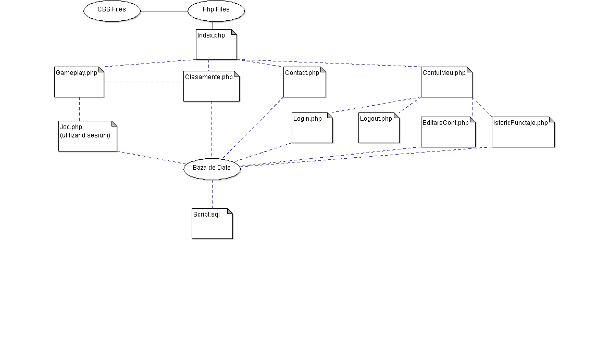Vor exista 2 baze de date:una pentru utilizatori si una pentru imagini.Baza de date pentru imagini va contine o tabela cu imagini preluate local sau prin API de la Flickr iar baza de date pentru utilizatori va contine tabela pentru utilizatori,tabela pentru mesajele primite din feedack-ul utilizatorilor si tabela pentru clasamentele zilnice.
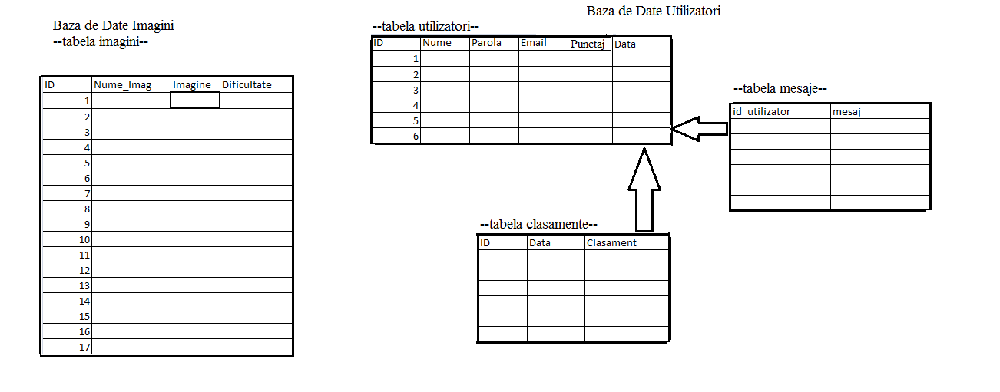In tabela "Utilizatori",fiecare utilizator va avea ca atribut Data si Punctajul din data respectiva.In functie de data ,se vor forma niste clasamente zilnice care vor cuprinde utilizatorii cu punctaj maxim din ziua respectiva.Cu ajutorul functiei "fputcsv"",acesti utilizatori ,cat si punctajele lor,vor fi puse in fisere CSV.
Formarea CLASAMENTELOR :
In tabela "Ulilizatori",fiecare ulizitator va avea ca atribut Data si Punctajul din data respectiva.In functie de data ,se vor forma niste clasamente zilnice care vor cuprinde utilizatorii cu punctaj maxim din ziua respectiva.Cu ajutorul functiei "fputcsv"",acesti utilizatori ,cat si punctajele lor,vor fi puse in fisere CSV. Formatul JSON permite crearea de obiecte cu ajutorul JavaScript.Se vor folosi functiile json_encode() si json_decode() pentru a putea lucra cu formatul JSON in PHP.
Inserarea imaginilor :
Inserarea imaginilor in Baza de Date se va face preluand imaginile local cat si cu ajutorul API-ului de la Flickr. Inserarea imaginilor local se va face folosind functii specifice MySQL in PHP.Aceste imagini sunt considerate fisiere de tip BLOBs asa ca inserarea acestor fisiere se va face folosind functiile:file_get_contents-pentru continutul imaginii,insertBlob-pentru inserare.Inserarea imaginilor va fi facuta dintr-un form de tip upload. Imaginile preluate din API-ul Flickr in array-ul $photos,vor fi introduse in baza de date.
Pagina principala a aplicatiei Guess The Star :
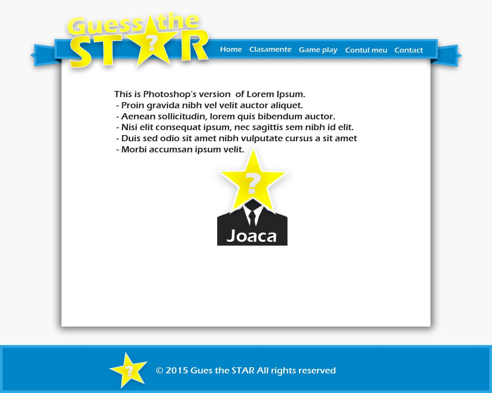Prin urmatoarele diagrame Use-Case sunt modelate celelate pagini ale aplicatiei .
Pagina Clasamente :
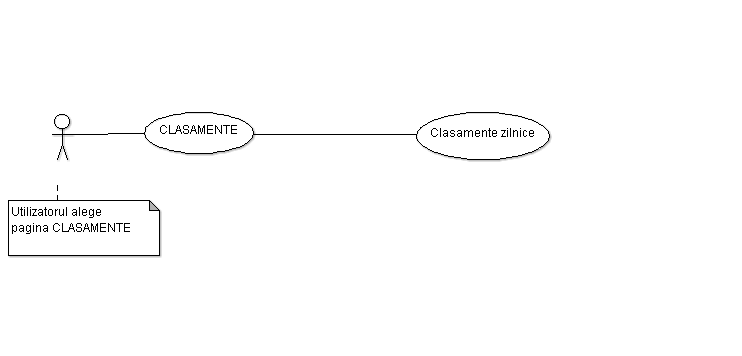 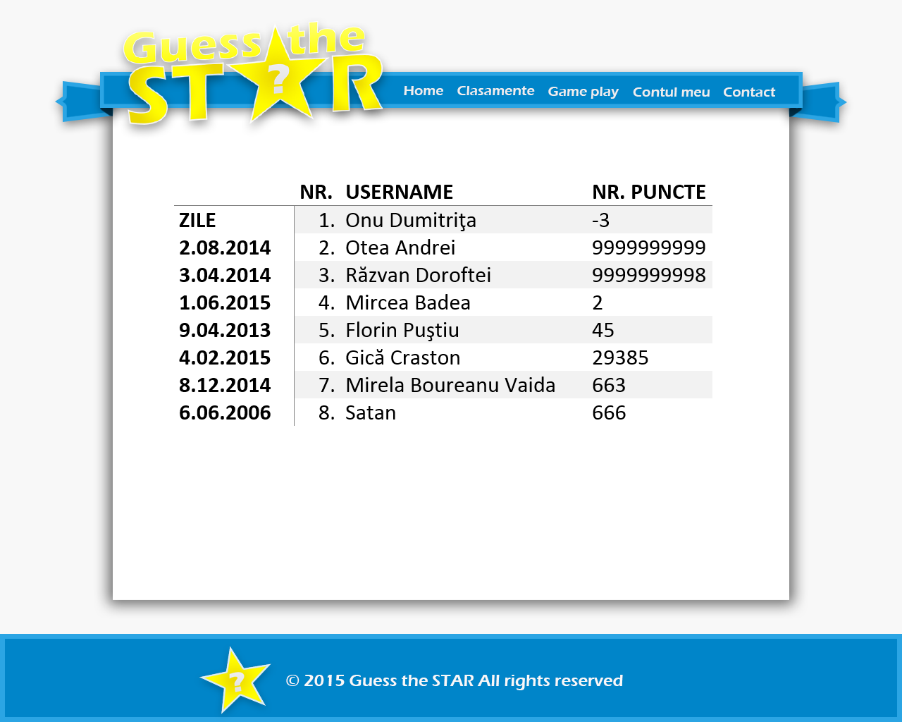Pagina GamePlay :
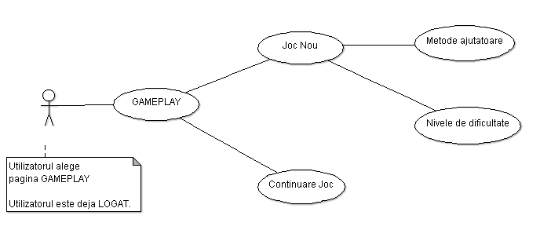 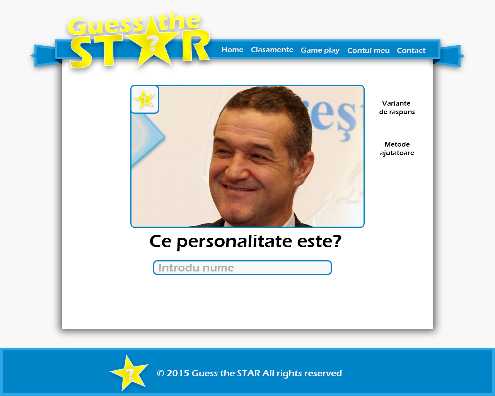Pagina Conutul meu :
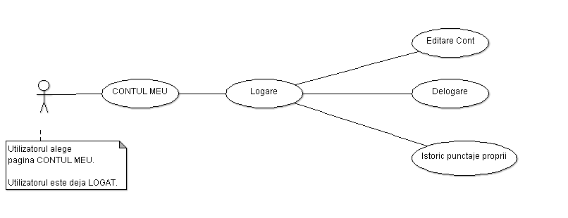 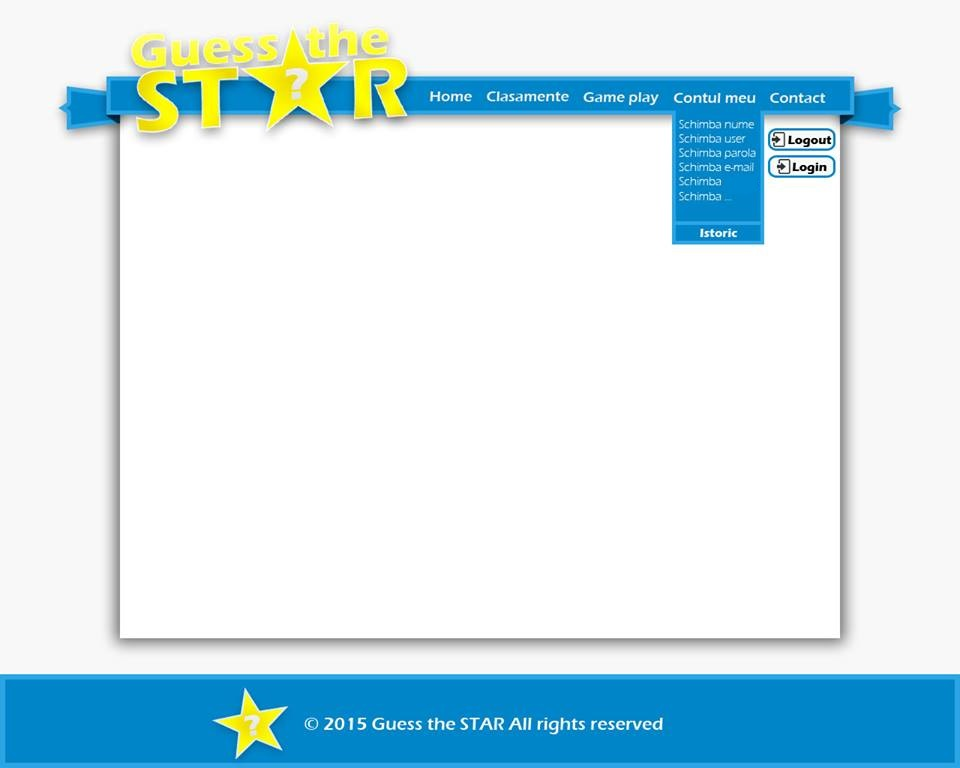Pagina Contact :
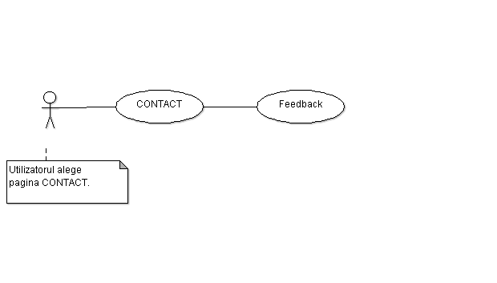 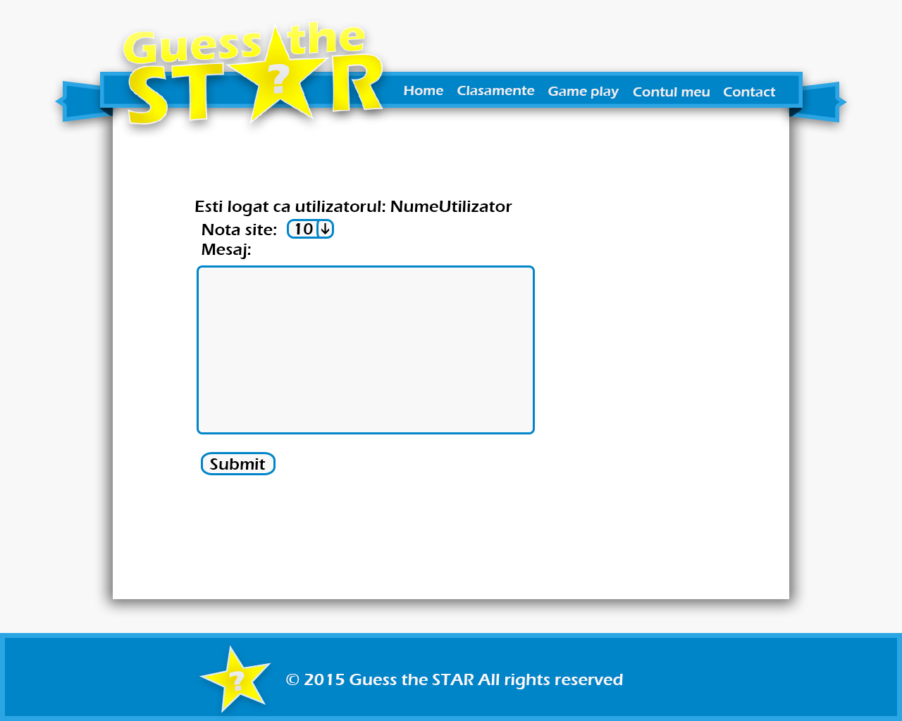Aplicatia va fi alcatuita din 7 module : 1. Modulul de Logare/Delogare . 2. Modulul Joc Nou . 3. Modulul Continuare Joc . 4. Modulul pentru Clasamente . 5. Modulul de Contact . 6. Modulul pentru Istoricul punctajelor proprii . 7. Modulul BD . O schita a modularizarii este urmatoarea :
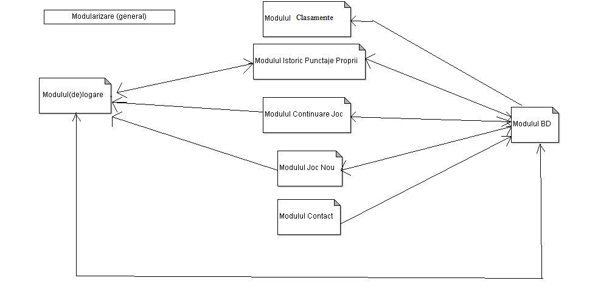Implementarea interfetei :
Prezentarea arhitecturii de ansamblu a aplicatiei :
Pentru logare utilizatorul va apasa butonul de logare care ii transmite aplicatiei ca va avea de efectuat o operatie de LOGIN . Completarea formularului de login si trimiterea informatiilor la server , care va comunica cu BD si va trimite mai apoi la interfata un mesaj corespunzator . Daca logarea are loc cu succes , in cadrul modulului (de)logare se vor putea efectua urmatoarele operatii : - editare cont: utilizatorul isi va modifica unele detalii legate de contul sau cu ajutorul unei interfetei care va comunica cu serverul pentru a realiza editarile dorite de utilizator . Se vor folosi butoane si campuri de text in cadrul interfetei - delogare : apasand butonul de delogare , serverul va primi cererea de delogare si va efectua operatia . - afisarea istoricului propriu Acest modul comunica ( indirect ) cu modulul de BD .
Urmatoarea diagrama de activitate arata pasii care sunt executati in cadrul modulului .
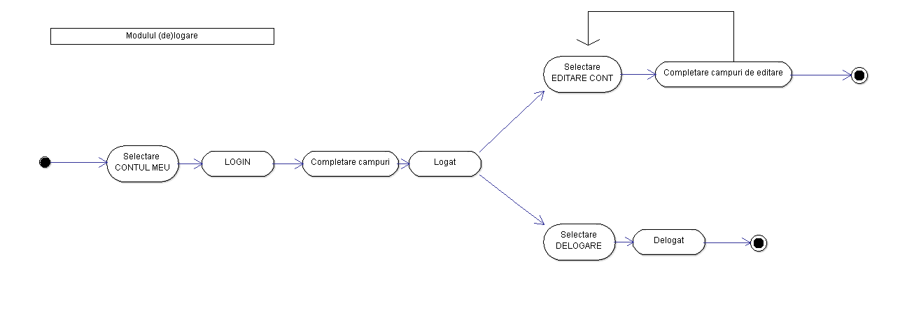Comunicarea partilor componente ale modulului :
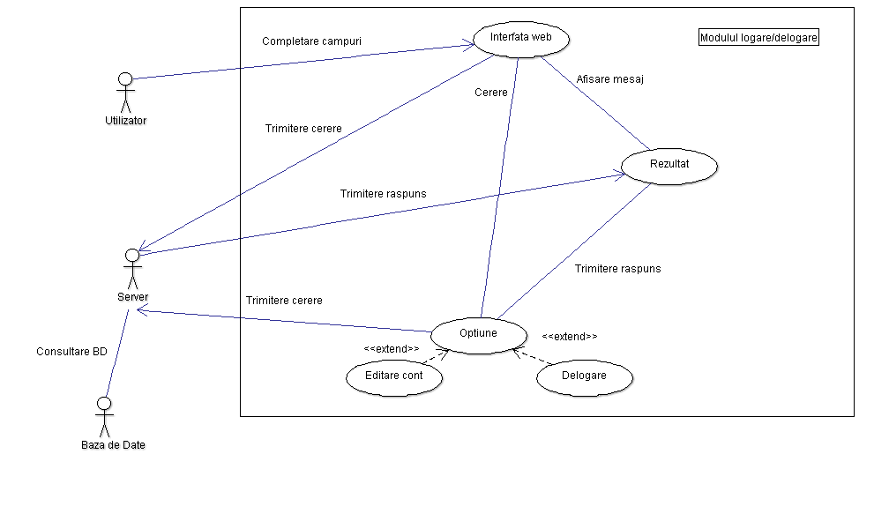Atunci cand jucatorul alege JOC NOU,acesta va trebui sa aleaga nivelul de joc.In functie de nivelul de joc vom avea imagini ce vor aparea,acestea fiind preluate din baza de date.Cu cat mai multe imagini ghiceste,cu atat punctajul va fi mai mare.Punctajul se va stabili dupa un contor care va numara cate imagini corecte a ghicit utilizatorul.Utilizatorul va avea optiuni de joc:Metode ajutatoare(variante de raspuns sau ajutorul unui prieten).Atunci cand alege CU AJUTORUL UNUI PRIETEN,se va trimite un email cu cererea utilizatorului. Se stie ca s-a ghicit numele personalitatii atunci cand numele introdus de utilizator corespunde cu numele imaginii din baza de date. Se termina sesiunea de joc atunci cand utilizatorul alege optiunea INCHEIERE JOC.
Urmatoarea diagrama de activitate arata pasii care sunt executati in cadrul modulului .

Comunicarea partilor componente ale modulului :

Atunci cand utilizatorul alege CONTINUARE JOC,cu ajutorul cookie-urilor se continua o sesiune precedenta de joc.Utilizatorului i se vor pune la dispozitie aceleasi optiuni ca mai sus.
Urmatoarea diagrama de activitate arata pasii care sunt executati in cadrul modulului .

Comunicarea partilor componente ale modulului :

Clasamentele vor putea fi facute publice atat sub forma de document HTML, cat si ca flux de stiri Atom, inclusiv in formatele CSV si JSON.
Urmatoarea diagrama de activitate arata pasii care sunt executati in cadrul modulului .
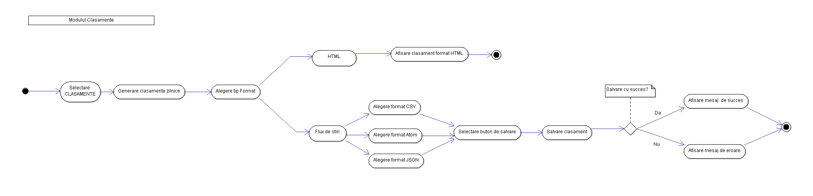Comunicarea partilor componente ale modulului :
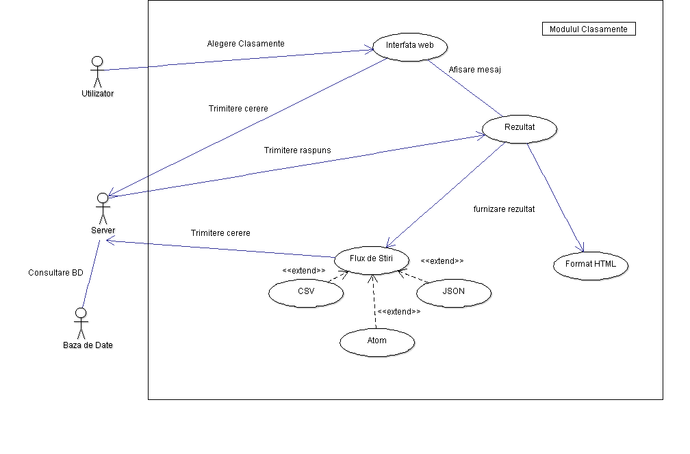Pentru implementarea modului de contact vom folosi o tabela separata cu o cheie secundara din tabela cu utilizatori ( id utilizatorului ) , tabela ce va contine mesajele transmise de catre utilizatori . Pentru a avea acces la acest modul utilizatorul va trebui sa fie logat . Se selecteaza butonul CONTACT din cadrul HomePage . In noua pagina deschisa utilizatorul va completa campurile dorite si va apasa SEND . Informatiile vor ajunge la sever iar acesta le va insera in baza de date . Utilizatorul va primi un mesaj corespunzator in urma efectuarii acestor operatii .
Urmatoarea diagrama de activitate arata pasii care sunt executati in cadrul modulului .
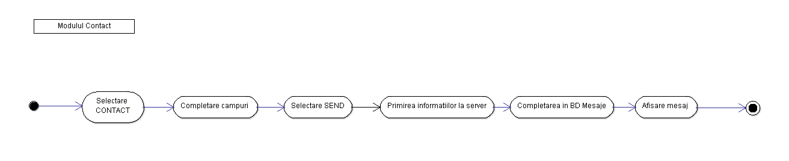Comunicarea partilor componente ale modulului :
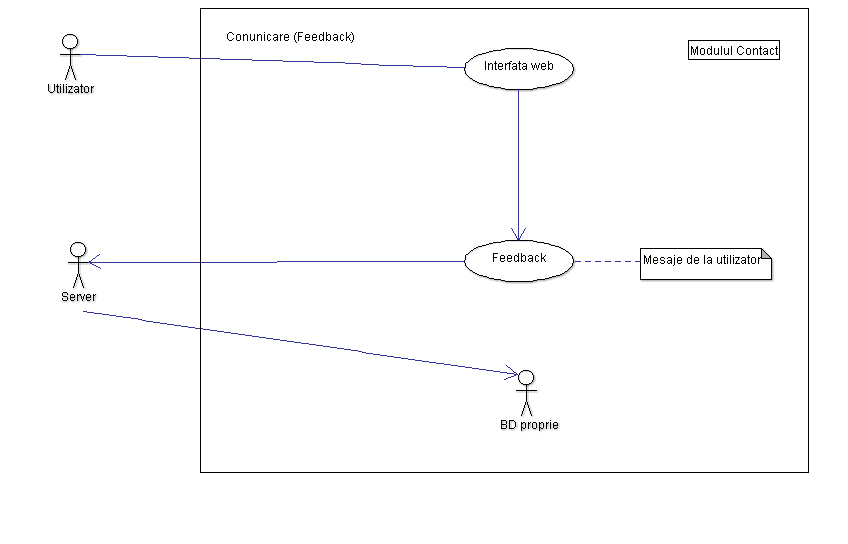Si in cadrul modului istoric se va putea face operatia de afisare a istoricului si salvarea acestuia . Serverul va consulta baza de date si va trimite la interfata rezultatul interogarilor . Afisarea va fi in format HTML cu posibilitatea de a salva istoricul in format CSV prin selectarea butonului de SALVARE . Daca salvarea va fie efectuata cu succes se va afisa un mesaj de succes iar in caz de eroare se va afisa un mesaj de eroare corespunzator . Acest modul comunica ( indirect ) cu modulul de BD .
Urmatoarea diagrama de activitate arata pasii care sunt executati in cadrul modulului .
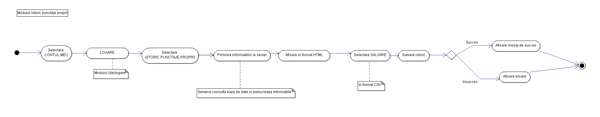Comunicarea partilor componente ale modulului :
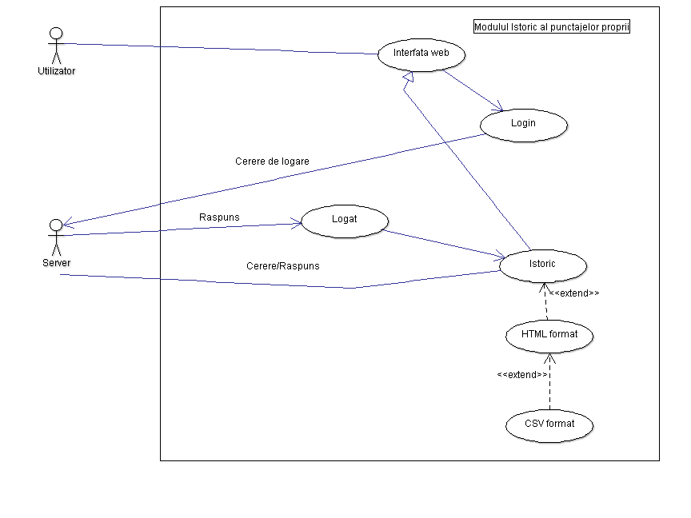Cele doua baze de date , prezentate mai sus , vor comunica cu restul modulelor prin intermediul serverului(php).
Urmatoarea diagrama de activitate arata pasii care sunt executati in cadrul modulului .
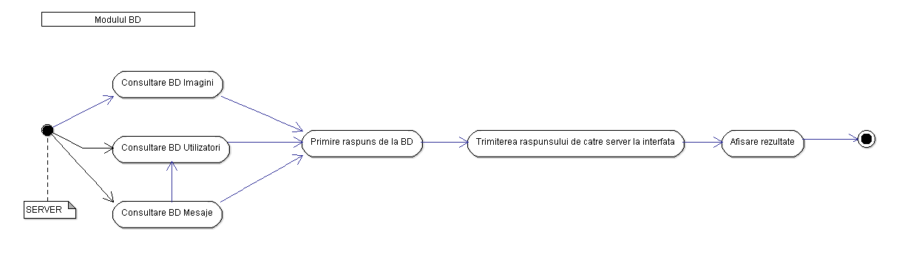Comunicarea partilor componente ale modulului :
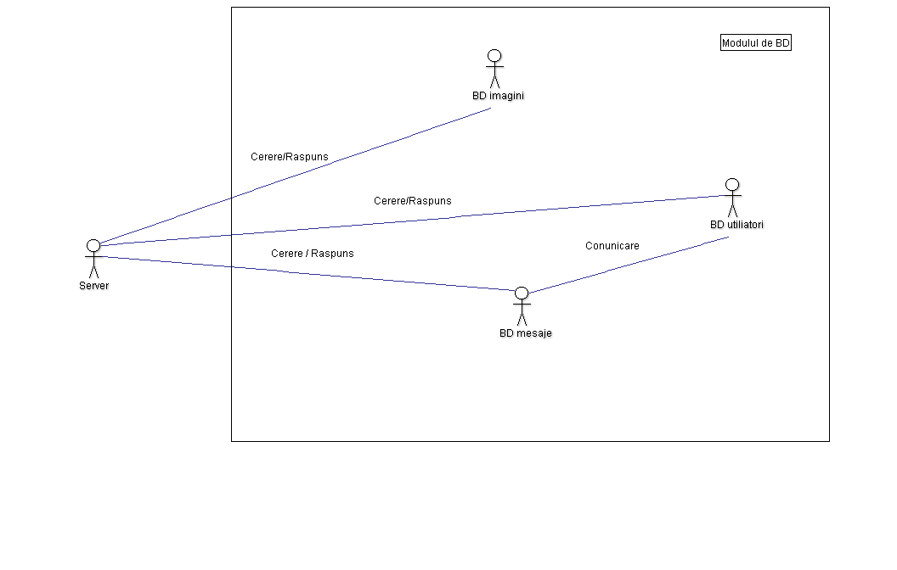Securitate si Vulnerabilitati :
Vom incerca sa scriem o functie cu ajutorul careia sa securizam datele si sa salvam eventualele atacuri . Functia va converti in entitati HTML o mare parte din caracterele speciale care pot face rau dar nu vom converti si caracterul "diez" sau "and" . Pentru a salva eventualele atacuri ne vom folosi de un tabel in baza de date pe care il vom crea ulterior . Tabelul va contine 4 campuri ( IP , browser , data , tip ) . Vom implementa o functie aspra variabilelor care vor avea o valoare numerica . Astfel , in functie de anumite caractere vom sti ce a incercat atacatorul sa faca si vom salva in baza de date IP-ul si browserul sau .
Vom incerca sa fixam urmatoarele tipuri de vulnerabilitati: 1) Remote File Inclusion ( RFI ) 2) Local File Inclusion ( LFI ) 3) Cross Site Scripting ( XSS ) 4) HTTP Header Injection 5) SQL Injection 6) Login ByPass 7) Remote Code and Command Execution 8) Full Path Disclosure 1) Remote File Inclusion - consta in includerea unui fisier aflat pe un alt server folosind un parametru GET ; - scriptul va include direct fisierul specificat prin valoarea unei variabile trimise prin GET; - cum fixam vulnerabilitatea : schimbarea ideii incluziunii - vom folosi un switch, care va contine o lista cu paginile care pot fi incluse . 2) Local File Inclusion - principiul este acelasi ca si la RFI ; - scriptul va verifica daca acel fisier exista , iar daca exista in va include ; - se pot include fisiere de pe server ; - cum fixam vulnerabilitatetea : la fel ca si in cazul RFI . De asemenea , se pot filtra sirurile "../" sau"..\". 3) Cross Site Scripting - o vulnerabilitate de tip client-side care nu afacteaza serverul insa va afecta clientul ; - intalnita la nivelul scriptului ce se foloseste de cookie-uri ; - ideea de baza : scriptul va citit o variabila prin GET , apoi afiseaza valoarea ei in browser (JavaScript) . Se testeaza variabilele prin GET carora li se atribuie o valoare cu cod JavScript ; - codul JavaScript va fi interpretat in browserul victimei ; - la cookie se ajunge foarte usor prin "document.cookie" in JS , si de cele mai multe ori se foloseste un cookie grabber(script PHP care primeste prin GET cookie-urile victimelelor si le scrie intr-un fisier ) pentru furtul acestora . - cookie-urile se pot trimite catre grabber prin JavaScript foarte usor; - se poate folosi un iframe iar pagina va putea contine orice ; - cum fixam vulnerabilitatetea : PHP ne ofera 2 htmlentities si htmlspecialchars (transforma caracterele speciale in entitati HTML) astfel nu se va mai executa niciun cod JS . - chiar daca s-a reusit furtul de se poate opri aceasta actiune prin : crearea unei noi variabile de sesiune in care se va memora adresa IP in momentul logarii . Cand utilizatorul va accesa o pagina se va verifica IP , daca nu coincide se va efectua delogarea . 4) HTTP Header Injection - nu toate headerele care provin de la utilizator sunt corecte, nici User-Agent, nici Cookie ; - se poate folosi pentru SQL Injection, daca de exemplu se cauta in baza de date în functie de un cookie; 5) SQL Injection - un atacator poate afala informatii despre baza de date datorita unor interogari facute peste acea baza de date ; - cum putem fixa vulnerabilitatea : se foloseste mysql_real_escape_string(adauga back-slashuri in fata unor caractere speciale); - !! aceste caractere au o semnificatie speciala ; 6) Login ByPass - atac intalnit in casutele de logare ; - cum fixam vulnerabilitatetea : verificam daca exista userul , apoi verificam daca este corecta parola si apoi facem logarea ; - ( in baza de date parola va fi salvata criptat) . 7) Remote Code and Command Execution - consta in executarea unor comenzi PHP; - lucru posibil datorita functiei "eval" cand se evalueaza un parametru ; - daca utilizatorul va face request catre: http://site.com/script.php?text=Un text';phpinfo(); - va observa in browser rezultatul functiei phpinfo(); - consta in executarea unor comenzi in Terminal ( cmd ); 8) Full Path Disclosure - e poate descoperi calea completa pentru un fisier; - cum fixam vulnerabilitatetea : folosind functia "is_array".
API :
FLICKR este cel mai mare site de fotografie de pe Internet.Integrarea Flickr in site-ul nostru se va face folosind Flickr API si phpFlickr. Pasul 1:Iau o cheie pentru Flickr API Accesez http://www.flickr.com/services/apps/create/apply/ ,aplic pentru folosinta necomerciala si fac rost de cheie. Pasul 2:Descarc phpFlickr PhpFlick este o clasa scrisa in PHP care se comporta ca un wrapper pentru API.Fisierele proceseaza datele date de Flickr si returneaza vectori in PHP pe care ii vom folosi pentru a afisa imagini. Pasul 3:Configurari In pasul curent,ma conectez la Flickr pentru a primi acces la imagini.Inainte de a incepe procesul,se creaza un folder 'cache' cu permisiune de scriere(CHMOD 777) ,pentru o functionare corecta a phpFlickr. In fisierul config.php se vor introduce username-ul folosit pentru Flickr si cheia generata mai sus. In variabila $photos( $photos = $f->people_getPublicPhotos($nsid, NULL, NULL) ,$nsid semnifica un id al unui utilizator unic din array-ul $result) se vor stoca imaginile de la un anumit utilizator al carui id va fi introdus din program.
Bibliografie si Webografie :
http://profs.info.uaic.ro/~busaco/teach/courses/web/web-film.html http://www.ixedo.ro/page/tehnologii-web-software http://webappsuccess.com/web-technology-fundamentals.html